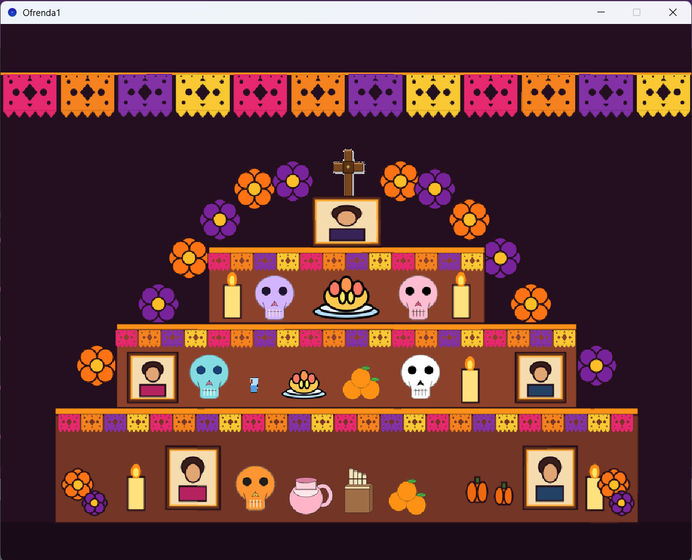

Nuestro proyecto

Ofrenda virtual de Día de Muertos
Este proyecto consiste en desarrollar una representación digital de una ofrenda mexicana, incorporando elementos tradicionales como flores de cempasúchil, veladoras, fotografías, papel picado y alimentos.
A través de la tecnología buscamos representar nuestras tradiciones culturales en un entorno virtual e interactivo.
Objetivo del proyecto
Objetivo general
Crear una ofrenda virtual que permita representar las tradiciones del Día de Muertos mediante recursos digitales.
Desarrollo digital
Aplicar herramientas tecnológicas para diseñar un espacio virtual con elementos tridimensionales.
Tradición mexicana
Representar los elementos culturales y tradicionales que forman parte de esta celebración.
Elementos de la ofrenda
Flores
Representan el camino para recibir a los difuntos.
Veladoras
Simbolizan la luz que guía a las almas.
Pan de muerto
Uno de los alimentos tradicionales de la ofrenda.
Calaveras
Representan la relación cultural con la muerte.
Galería del proyecto
Diseño de la ofrenda
🎬 Presentación virtual
En este espacio se podrá visualizar el recorrido o video de nuestra ofrenda virtual.